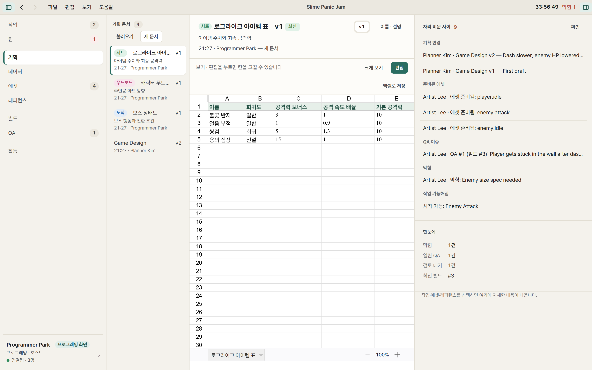

사용 설명서
잼을 열고 팀원이 모이기까지 5분이면 됩니다. 처음이라면 시작하기부터 잼 열기, 참가하기 순서로 읽어 보세요. 내 역할의 하루가 궁금하다면 역할별 안내를 보세요.
시작하기
Windows 10 또는 11에서 실행됩니다. 설치 없이 실행 파일 하나로 동작하고, 팀원 모두 같은 앱을 씁니다.
잼 열기 (호스트)
잼 동안 켜 둘 PC 한 대가 호스트가 됩니다. 모든 데이터는 이 PC에 저장됩니다.
- 앱을 열고 내 이름과 역할(기획·아트·프로그래밍, 여러 개 가능)을 고릅니다.
- 새 잼 열기에 잼 이름과 시작·끝 시간을 넣고 잼 열기를 누릅니다.
- 화면에 나오는 방 코드(예:
AH83-G2)를 팀원에게 알려 줍니다.
처음 열 때 Windows 방화벽 창이 뜨면 개인 네트워크에서 허용하세요. 앱을 닫아도 데이터는 남아 있고, 시작 화면의 "이 PC에서 연 잼"에서 다시 열 수 있습니다.
참가하기 (팀원)
- 호스트와 같은 Wi-Fi에 연결합니다.
- 앱을 열고 이름과 역할을 고른 뒤 방 코드를 입력하고 참가를 누릅니다.
연결이 잠깐 끊겨도 마지막 화면은 그대로 보이고, 다시 연결되면 자동으로 따라잡습니다. 호스트 PC의 주소가 바뀌어도 방 코드로 다시 찾아갑니다.
연결이 안 될 때
| 증상 | 해결 |
|---|---|
| 방 코드로 찾지 못함 | 같은 Wi-Fi인지 확인하세요. 행사장 Wi-Fi가 기기끼리의 연결을 막는 경우가 있습니다. 이때는 호스트의 설정에서 팀 Wi-Fi(호스트 PC를 핫스팟으로)를 켜고 거기에 연결하세요. |
| 호스트 화면에 "들어오는 연결이 막혀 있음" 경고 | Windows 네트워크가 '공용'으로 되어 있으면 방화벽이 막습니다. 경고의 안내대로 허용하거나 네트워크를 '개인'으로 바꾸세요. |
| 코드로는 찾지 못함 | 시작 화면의 방 코드로 못 찾을 때: 주소로 참가를 켜고, 호스트 PC 왼쪽 아래 프로필에 나오는 주소를 192.168.0.10:47820처럼 포트까지 넣으세요. |
화면 둘러보기
왼쪽 메뉴에 화면이 있고, 오른쪽 패널에는 선택한 카드·에셋의 자세한 내용이나 "자리 비운 사이 바뀐 것"이 나옵니다. 좌우 패널은 끌어서 넓히고, Ctrl B·Ctrl Shift B로 접습니다.
| 작업 | 담당 없음·대기·진행 중·완료 보드와 일정 |
|---|---|
| 팀 | 누가 무엇을 하고 있는지, 막힌 사람, 자리 비움 |
| 기획 | 문서·도식·무드보드·기획용 시트와 버전 비교 |
| 데이터 | 게임에 들어가는 수치 표 (엔진용 JSON으로 내보냄) |
| 에셋 | 그림·소리 슬롯, 검토, Unity로 보내기 |
| 레퍼런스 | 방향을 잡는 참고 이미지와 메모 |
| 빌드 | 최신 빌드, 바로 실행(PLAY), 이전 빌드 |
| QA | 버그 보고와 처리 상태 |
| 활동 | 잼 전체의 기록 |
역할은 권한이 아니라 무엇을 먼저 보여 줄지를 정합니다. 여러 역할이면 왼쪽 아래 프로필에서 화면을 바꿀 수 있습니다.
작업 카드
새 카드(N)로 만들고, 카드를 대기 칸으로 끌어 가져가거나 시작·완료를 누릅니다. 카드를 열면 작업 지침, 왜 필요한가, 쓰이는 곳, 규격, 결과물, 참고할 것, 다음에 넘길 곳을 한 번에 볼 수 있습니다. 누가 무엇을 고쳤는지는 이력에 남습니다.
막혔을 때는 카드의 막혔어요를 누르세요. 팀 화면과 다른 사람의 화면 위쪽에 바로 보입니다. 화면의 어느 곳이든 Ctrl을 누른 채 클릭하면 그 자리를 팀원에게 가리킬 수 있습니다(핑).
기획 문서
기획 화면의 새 문서에서 종류와 템플릿을 고릅니다.
- 문서: 제목 단위로 나뉘어, 여러 사람이 서로 다른 부분을 동시에 고칠 수 있습니다. "Dash Cooldown: 1.5 sec"처럼 값을 적으면 버전 비교에서 "1.0 → 1.5"로 보입니다.
- 도식: 상자를 놓으면 격자에 맞고 연결선이 직각으로 꺾입니다. 가장자리 점을 끌어 다른 상자에 놓으면 연결됩니다.
- 무드보드: 이미지를 끌어 놓거나 붙여 넣고, 메모와 구역으로 정리합니다.
- 기획용 시트: 수식이 되는 표입니다. 엑셀 파일을 불러오고 저장할 수 있습니다.

에셋과 Unity
- 프로그래머나 기획자가 에셋 화면에서 슬롯 만들기로 필요한 그림을 요청합니다. 크기, 형식, 쓰이는 곳을 적습니다.
- 아트 보드에 카드가 생깁니다. 아티스트가 파일을 슬롯에 끌어 놓으면 이름과 규격을 확인해 줍니다.
- 준비 완료를 누르면, 프로그래머 화면에 데이터 업데이트가 생깁니다.
- 프로그래머가 설정에서 Unity 프로젝트를 연결해 두면, 업데이트 한 번으로
Assets/GameJamSync/에 같은 경로로 들어갑니다..meta를 건드리지 않아 프리팹 참조가 유지됩니다.
빌드와 플레이
빌드 화면에서 빌드 폴더를 고르고 빌드 올리기를 누릅니다. 팀원은 PLAY로 바로 실행합니다. 두 번째 빌드부터는 바뀐 파일만 받습니다. 최종 제출할 빌드는 FINAL로 표시하세요.
QA 보고
게임을 하다 문제가 보이면 Ctrl Shift Q를 누르세요. 스크린샷이 찍히고, 무슨 일이 있었는지 한 줄만 쓰면 지금 빌드와 함께 보고됩니다. 프로그래머는 QA 화면에서 고치는 중·고침·확인 완료로 상태를 바꿉니다.
백업 호스트
호스트 PC가 꺼져도 잼이 계속되도록, 팀원 한 명을 백업 호스트로 정해 두세요.
- 호스트: 설정 → 연결에서 팀원을 고르고 지정합니다.
- 지정된 사람: 같은 화면에서 수락하고 폴더 고르기를 누릅니다. 그때부터 잼 전체가 계속 복사됩니다.
- 호스트를 바꿀 때: 호스트는 호스트 넘기기, 백업 호스트는 호스트 이어받기. 팀원은 자동으로 새 호스트에 연결됩니다.
- 호스트 PC가 갑자기 꺼졌다면: 백업 호스트가 호스트 없이 이어받기로 마지막 복사본에서 이어 갑니다.
AI 연결
호스트는 설정 → AI 연결에서 Codex나 Claude Desktop에 붙일 설정을 복사할 수 있습니다. AI는 "AI 도우미"라는 별도 팀원으로 카드·문서·표를 다루고, 바꾼 것은 모두 기록되어 AI 변경 한꺼번에 되돌리기로 되돌릴 수 있습니다. AI는 호스트 PC에서만 연결됩니다.
잼이 끝나면
호스트의 설정 → 호스트 → 마감 내보내기를 누르면 한 폴더로 정리됩니다: 요약, 문서(Markdown), 데이터 표(JSON·CSV), 에셋 마지막 버전, 최종 빌드, 카드·QA 목록, 복원용 백업.
단축키
| Ctrl K | 명령 찾기 |
| Alt 1–9 | 화면 이동 |
| Alt ← Alt → | 뒤로 · 앞으로 |
| N | 새 카드 |
| U | 에셋 올리기 |
| Ctrl + 클릭 | 그 자리를 팀원에게 가리키기(핑) |
| Ctrl Shift Q | QA 캡처와 보고 (게임 중에도) |
| Ctrl + Ctrl − Ctrl 0 | 화면 크기 |